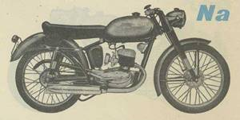
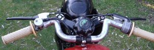
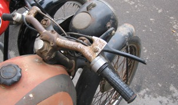

|
Modello
esteticamente simile al 125 GSa,
per via della forma del serbatoio, e su alcune versioni
anche per il manubrio. La
sella bicolore, nera e rossa,
aveva la stessa forma, anche se un paio di centimetri
più corta di quella del GSa e priva della linguetta di
appoggio al serbatoio. |
 Cliccare sulle immagini per ingrandirle |
I 2 modelli principali di manubri utilizzati   |
MOTORE: Monocilindrico 2 tempi, alesaggio e corsa 52 x 58 mm, cilindrata effettiva 123 cc.
Potenza effettiva 5 CV a 5200 giri, rapporto di compressione 1÷6,5
Velocità massima 85 km/h
Carburatore Dell'Orto UB 20 BS
Accensione a volano magnete
Cambio a 3 rapporti, trasmissione primaria e secondaria a catena
Frizione in bagno d'olio a dischi multipli
TELAIO A culla singola
Forcella anteriore telescopica teleidraulica
Sospensione posteriore a forcellone oscillante con ammortizzatore idraulico
Cerchio anteriore: 2" x 19" Cerchio posteriore: 2" x 19"
(N.B. La larghezza è riferita alla misura interna del canale)
Capacità serbatoio 16 litri
Potenza impianto elettrico 28 W
Consumo norme CUNA 2,38 litri/100 km
Candela Marelli CW 225 AT
L'angolo dei conservati

Esemplari restaurati